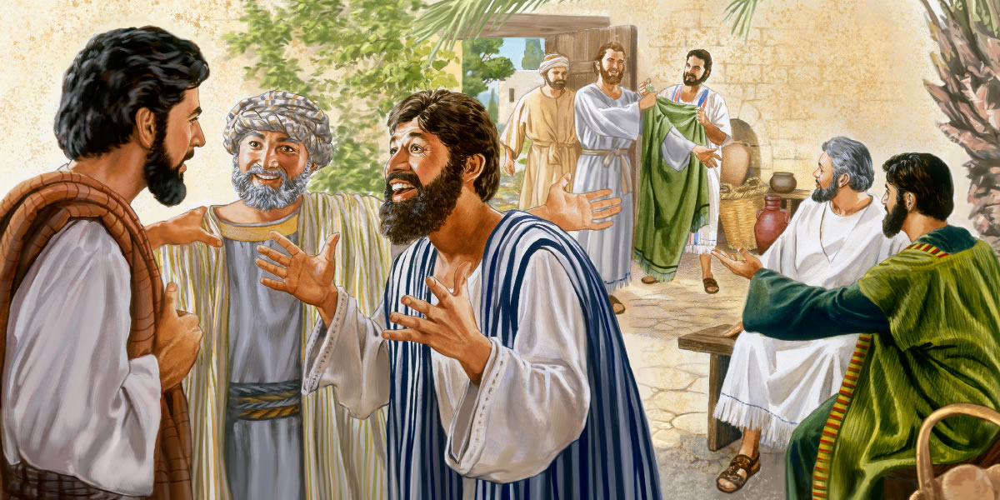

<div id="f1" class="north_center">
<figure>

</figure>
</div>
<header>
<p class="contextTtl" id="p1" data-pid="1"><span id="page157" class="pageNum" data-no="157" data-before-text="157"></span><strong>SECTION 4</strong></p>
<h1 id="p2" data-pid="2"><strong>Jesus’ Later Ministry in Judea</strong></h1>
<h2 id="p3" data-pid="3">“Beg the Master of the harvest to send out workers.”​—<a href="jwpub://b/NWTR/42:10:2-42:10:2" data-bid="1-1" class="b">Luke 10:2</a></h2>
</header>
